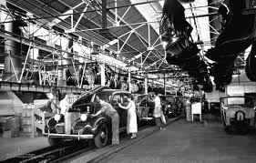

FORD MOTOR COMPANY
FORDISMO:

O Fordismo foi o modelo de produção industrial que revolucionou o início do século XX. Criado por Henry Ford em 1913, ele uniu a esteira mecânica aos conceitos de eficiência do Taylorismo, transformando o carro de um item de luxo artesanal em um bem de consumo de massa.
COMO FUNCIONAVA:
O sistema era baseado no princípio de produzir o máximo possível no menor tempo, reduzindo o custo unitário. Ele se apoiava em quatro pilares fundamentais:
- Linha de Montagem Móvel - Os operários ficavam parados enquanto uma esteira rolante levava as peças até eles. Isso eliminou o tempo gasto no deslocamento dos trabalhadores pela fábrica.
- Extrema Divisão de Trabalho - Cada trabalhador realizava uma única tarefa ultraespecífica repetidamente (como apertar um parafuso ou fixar uma porta). Não era necessária qualificação técnica.
- Padronização dos Produtos - Para produzir rápido, o produto precisava ser idêntico. Daí surgiu a famosa frase de Henry Ford: "O cliente pode ter o carro da cor que quiser, desde que seja preto", pois a tinta preta secava mais rápido.
- Peças Intercambiáveis - Os componentes eram idênticos e padronizados. Se uma peça quebrasse, bastava substituí-la por outra igual, sem necessidade de ajustes artesanais.
IMPACTOS NA REVOLUÇÃO INDUSTRIAL E NA SOCIEDADE: